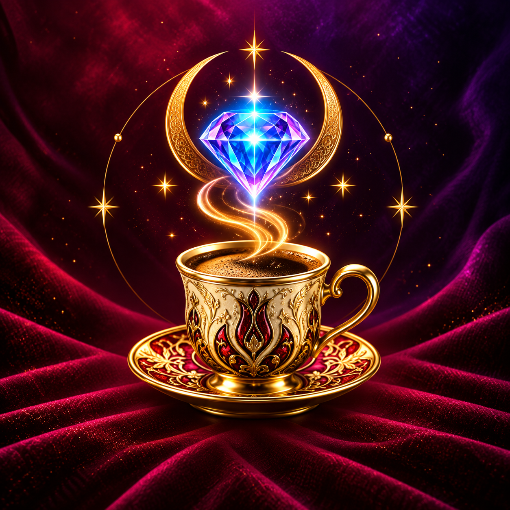

Kahve Falı
Fincan ve tabak fotoğraflarındaki sembolleri, seçtiğin falcının üslubuyla kişisel bir yoruma dönüştür.

FINCelyaSezgilerinle teknolojiyi buluşturan Fincelya; kahve falından tarota, el falından astrolojiye uzanan zengin ve zarif bir keşif deneyimi sunar.
Bugün yeni ihtimaller için alan aç.
Her niyet için farklı, özenle tasarlanmış bir yolculuk.
Fincan ve tabak fotoğraflarındaki sembolleri, seçtiğin falcının üslubuyla kişisel bir yoruma dönüştür.
78 kartlık kapalı desteden seçimini yap; kartların mesajını yorumla birlikte keşfet.
Avuç içi fotoğrafındaki belirgin çizgiler üzerinden eğlence ve farkındalık odaklı bir okuma al.
Doğum tarihi, saati ve yerine göre sembolik eğilimleri ve günlük enerjini keşfet.
Düşüncelerini paylaş ve konuşmalarını uygulamaya döndüğünde kaldığın yerden sürdür.
Rüyandaki simgeleri ara ve olası anlamlarını merak uyandıran açıklamalarla incele.
Kahve falı, tarot, el falı, astrolojik yorumlar, rüya sembolleri ve Pandora sohbeti tek bir zarif deneyimde.
Coffee readings, tarot, palm readings, astrological interpretations, dream symbols, and Pandora chat in one elegant experience.
Kaffeesatzdeutung, Tarot, Handlesen, astrologische Interpretationen, Traumsymbole und Pandora-Chat in einem eleganten Erlebnis.
Fincelya'da Apple ile giriş ve Google ile giriş seçenekleri bulunur. Google girişi yalnızca hesabını oluşturmak ve oturumunu güvenle sürdürmek için temel profil bilgilerini kullanır.
Verilerini nasıl koruduğumuzu incele →Topluluğa katıl, deneyimlerini paylaş ve desteğe doğrudan ulaş.